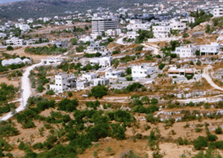
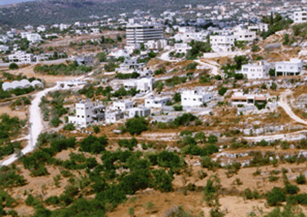

|
* The City of Salfeet lies in the middle north of Palestine with an elevation of 570 meters. The word “Salfeet” is composed from the affixes (sal) which means box and (feet) which means grapes: this is due to the fact that the City of Salfeet was famous for grapes and vine which are still spread out in the City.
* The City is situated on a hill, on a nice geographic location supervising Wadi Al- Sha’r to the east and Wadi al Matwi to the west.
* Salfeet is an old city and considered to be of the Kananite Era and became part of the Roman and, later, the Islamic Empires.
* In the Turkish period Salfeet was part of Beirut State, and in 1882 became the center of the district. In 1945 during the British Mandate the Village Council was established and in 1952 during the Jordanian Era was transformed to Local Council. Finally in 1955 it was promoted to Salfeet Municipality. Since then Salfeet Municipality was presided by the following gentlemen :
1 – Mr. Omar Afaneh 1955 – 1956.
2 – Mr. Mahmoud A. Jawwad 1958 – 1965.
3 – Mr. Nimr Al-Harim 1965 – 1966.
4 – Mr. Hasan Al-Zeer 1966 – 1997.
5 - Dr. Shaher Ishtieh : the current Mayor of Salfeet
After the establishment of the Palestinian National Authority in 1995 the district was promoted to “Salfeet Governorate” in order to develop the area and protect it from settlements.
* This governorate extends from the east to the west starting from Za’tarah on Nablus-Ramallah Road reaching the Green Line beside Kufr Qasem. This area is separated from the areas of Nablus and Qalqilia naturally by Wad Qana Valley in the north and from the Area of Ramalla to the south by Wadi–Saridah.
* In this governorate we have 21 populated zones with 70.000 inhabitants and a surface area amounting 218 km2.
* This governorate is depending economically on the olive cultivation and stones.
* Regional roads which connect the towns and villages in the governorate are old and they were not maintained since the Jordanian Era. These towns and villages need a direct connection with the surrounding areas; specially the other Palestinian Governorates, such as Ramallah, Nablus, Qalqilia.